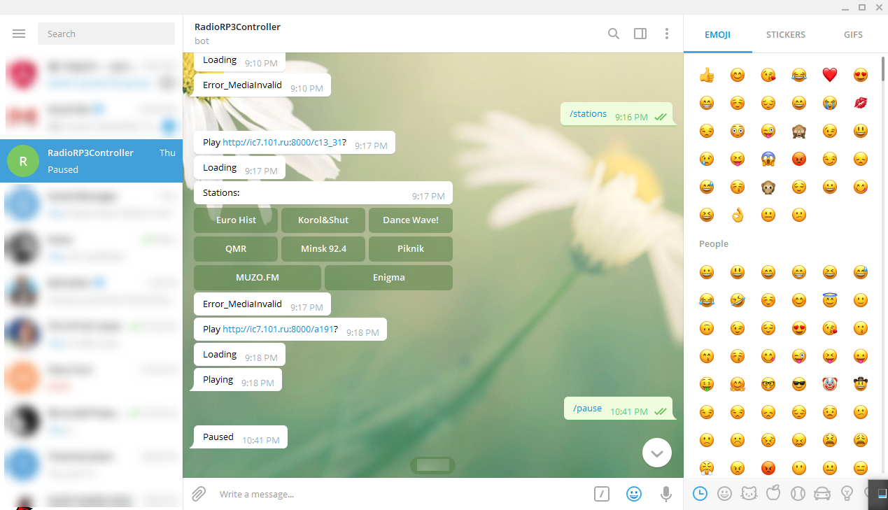

Radio on Windows IOT via Telegram Bot - 2 April, 2018
Tags: WindowsIOT, bot, telegram
This article describes and share a source code of application to play radio using Windows IOT. It is possible to control application using Telegram Bot.
Resources:
- Rasperry PI 3 with installed Windows IOT;
- Portable JBL Charge 3;
Developed radio application is background application. It consists from 2 parts:
- Telegram Bot to control radio. Supported commands:
/startis to start play;/stopis to stop application;/pauseis to pause playing;/stationsis to show list of radio stations;/upis to increase volume;/downis to decrease volume;
- Radio player is to play radio. It based on Windows-IoT-Core-Ignite.
Example of the bot in Telegram: 
The source code is on GitHub.
Thanks.